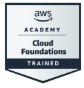
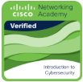
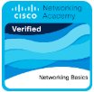
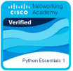

PORTAFOLIO PROFESIONAL
Hola, soy
Alejandro Zúñiga
Estudiante de Ingeniería de Sistemas
Experiencia en soporte tecnológico, coordinación operativa, automatización con Python, análisis de datos con Power BI y administración de sistemas GPS y CCTV.
01.
PERFIL
Sobre mí
Soy estudiante de VII ciclo de Ingeniería de Sistemas y licenciado de las Fuerzas Armadas. Cuento con experiencia en soporte técnico, coordinación operativa, telemetría, seguridad electrónica y sistemas GPS y CCTV.
He implementado automatizaciones con Python, reportes en Power BI y Excel con DAX y soluciones para el seguimiento de incidencias, orientadas a resolver necesidades operativas reales.
Busco aportar en áreas de soporte TI, automatización y análisis de datos. Tengo disponibilidad laboral inmediata e inglés básico III cursado en la Universidad Autónoma del Perú.
Áreas de enfoque
01
Soporte tecnológico
Diagnóstico de incidencias y atención a usuarios.
02
Automatización
Optimización de procesos mediante Python, Excel e IA.
03
Análisis de datos
Procesamiento, reportes y visualización de información.
04
Sistemas e IoT
GPS, CCTV, telemetría y dispositivos electrónicos.
02.
TRAYECTORIA
Experiencia profesional
JUN 2024 — SET 2026
Jun 2024 – Set 2026
Operador de Centro de Control
SECURITAS SAC · Línea 1 Metro de Lima
- Monitoreo y control de más de 400 cámaras de seguridad mediante Avigilon, Axis y HikVision.
- Gestión de sensores, alarmas, sistemas de acceso y seguimiento de incidencias operativas.
- Elaboración de informes y presentaciones de incidencias críticas para Seguridad Patrimonial.
- Coordinación de incidencias, registro de asistencia y soporte documental operativo.
LOGRO
Capacitación del equipo en herramientas de IA, con reducción reportada del 80 % en tiempos de gestión de datos. Desarrollo de un sistema Python para generar líneas de tiempo en PowerPoint (reducción reportada del 50 %) y de un tablero de supervisión en Power BI, Excel y DAX.
OCT 2022 — MAY 2024
1 año 7 meses
Asistente de Sistemas GPS
ANKA Perú GPS
- Configuración de GPS Server y Wialon IPS.
- Administración de usuarios, vehículos, geocercas y dispositivos GPS.
- Soporte técnico, mantenimiento de dispositivos, tarjetas electrónicas, GPS y NVR.
- Elaboración de informes mensuales de control y auditoría.
LOGRO
Creación de formularios en Google Forms vinculados a Excel, con una reducción reportada de aproximadamente 50 % del tiempo de registro comercial.
03.
STACK
Tecnologías y habilidades
Python
Automatización, análisis de datos, IA y desarrollo práctico.
SQL / Azure SQL
Gestión y prácticas con bases de datos relacionales y servicios cloud.
Excel Avanzado
Automatización, VBA, reportes y gestión de información.
Java
Programación orientada a objetos y fundamentos de desarrollo.
GPS / IoT
Wialon, GPS Server, Teltonika, Queclink y telemetría.
Git & GitHub
Control de versiones y documentación de proyectos.
Power BI / DAX
Tableros, indicadores operativos, modelado de datos y análisis con Excel y Power BI.
04.
DESARROLLO
Proyectos destacados
DATA · IA
Análisis y pronóstico de ventas
Prototipo orientado al análisis y predicción de ventas mediante Python, procesamiento de información y herramientas cloud.
Python
Google Colab
GCS
Streamlit
Explorar GitHub →
AUTOMATIZACIÓN
Control de activos
Sistema CRUD desarrollado con VBA y Excel para gestionar el control de llaves dentro de un centro de control.
Excel
VBA
CRUD
Explorar GitHub →
PYTHON
Automatización de líneas de tiempo
Sistema desarrollado en Python para generar líneas de tiempo en PowerPoint y reducir tareas repetitivas; según el CV, el proceso mejoró aproximadamente un 50 %.
Python
Automatización
PowerPoint
05.
APRENDIZAJE CONTINUO
Credenciales y formación
Consulta las insignias emitidas a través de Credly y los logros de formación registrados en Microsoft Learn. Las insignias formativas y las rutas completadas no implican haber aprobado un examen de certificación profesional.
Insignias digitales · Credly

10 oct 2026AWS Academy Graduate – Cloud Foundations
Amazon Web Services Training and Certification
Insignia de formación
Consultar insignia ↗
5 ago 2025Introduction to Cybersecurity
Cisco Networking Academy
Insignia de formación
Consultar insignia ↗
19 jun 2025Networking Basics
Cisco Networking Academy
Insignia de formación
Consultar insignia ↗
30 jun 2026Python Essentials 1
Cisco Networking Academy
Insignia de formación
Consultar insignia ↗Rutas completadas · Microsoft Learn
2026
Descripción de la administración y la gobernanza de Azure
Microsoft Learn · Introducción a la infraestructura en la nube
Ruta de aprendizaje completada
Consultar logro ↗
2025
Descripción de los conceptos de la nube
Microsoft Learn · Introducción a la infraestructura en la nube
Ruta de aprendizaje completada
Consultar logro ↗Formación adicional: Excel Avanzado · Fundación Telefónica (2024). Constancia pendiente de enlace público.
FORMACIÓN ACADÉMICA
Ingeniería de Sistemas
Universidad Autónoma del Perú
VII ciclo · En curso
IDIOMAS
Inglés básico III
Universidad Autónoma del Perú · 2025
HABLEMOS
¿Tienes un proyecto o una oportunidad?
Estoy interesado en seguir creciendo en proyectos relacionados con sistemas, soporte tecnológico, automatización y análisis de datos.
Lurín, Lima, Perú · Disponibilidad laboral inmediata
Celular: +51 991 852 642